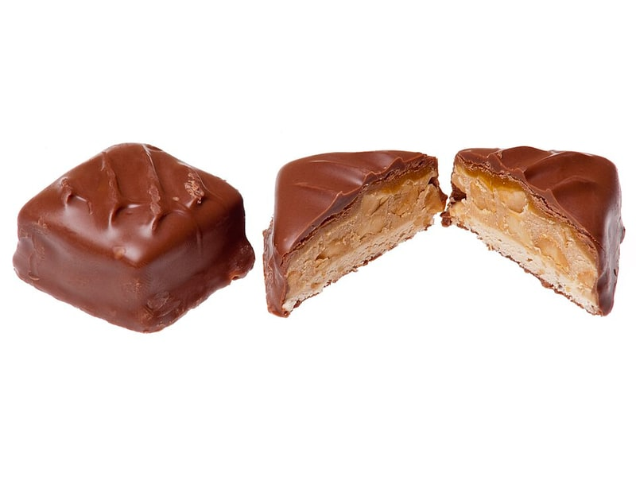

Słodycze i przekąski
Baton (np. Snickers)
Baton (np. Snickers): 8.6 g białka, 488 kcal, 60 g węglowodanów i 23 g tłuszczu na 100 g. Kategoria: Słodycze i przekąski.
Kalorie488 kcalna 100 g
Białko / proteiny8.6 g
Węglowodany60 g
Tłuszcz23 g
Cena (szac.)~3,98 złza 100 g
Ceny zaktualizowano: maj 2026 (szacunek — ceny w popularnych supermarketach)
Porcja: sztuka (50g)
| Kalorie | 244 kcal |
|---|---|
| Białko | 4.3 g |
| Węglowodany | 30 g |
| Tłuszcz | 11.5 g |
| Cena (szac.) | ~1,99 zł |
Szczegółowe składniki odżywcze na 100 g
| Wartość energetyczna (kalorie) | 488 kcal |
|---|---|
| Białko (proteiny) | 8.6 g |
| Węglowodany | 60 g |
| Tłuszcz | 23 g |
| Tłuszcze nasycone | 11 g |
| Tłuszcze nienasycone | 12 g |
| Witaminy i minerały | Cukier proste, Magnez, Żelazo |
| Współczynnik kcal / 1 g białka | 56.7 |
| Cena produktu (szac. za 100 g) | ~3,98 zł |
| Cena za 100 g białka (szac.) | ~46,28 zł |